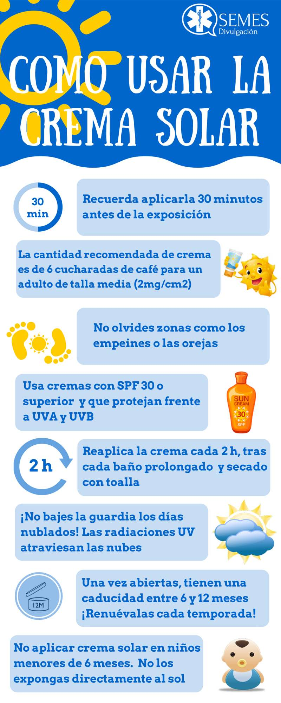

Tutorial: Cómo cuidar tu piel con protector solar
-
Importancia del protector solar

Descubre por qué es vital usar protector solar diariamente.
Link -
Cómo elegir el protector solar adecuado
Aprende a seleccionar el protector solar según tu tipo de piel y necesidades.
-
Aplicación correcta
Conoce la manera correcta de aplicar el protector solar para una protección efectiva.
-
Reaplicación a lo largo del día
Entiende cuándo y cómo debes reaplicar el protector solar para mantener tu piel segura.
Link para ingresar